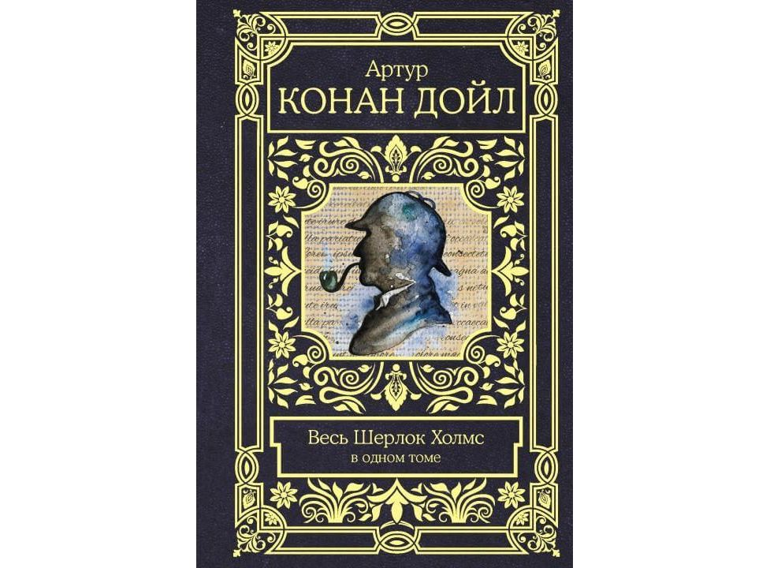
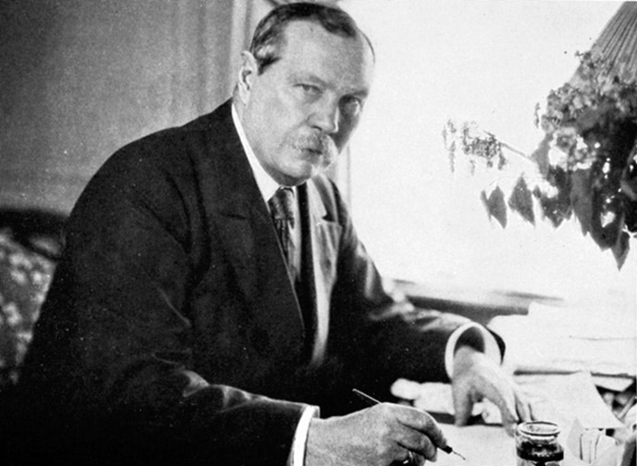

Моя любимая книга:
Шерлок Холмс

Приключения Шерлока Холмса" Артур Конан Дойла - это сборник
детективных рассказов. Все они рассказывают о том, как блестящий
детектив-любитель по имени Шерлок Холмс раскрывает запутанные
преступления, удивляя остротой своего ума и умением делать выводы
своего друга, доктора Ватсона, от лица которого ведется
повествование.

Артур Конан Дойл – английский писатель, работающий в
приключенческом, детективном, научно-фантастическом и
юмористическом стилях, создавший более семидесяти книг, обладатель
орденов Святого Иоанна, Меджидие, Короны Италии и титула
рыцаря-бакалавра. Артур Игнатиус Конан Дойл родился 22 мая 1859
года в Эдинбурге в семье талантливого художника, по
совместительству клерка, и обожательницы литературы. От матери
писатель и унаследовал любовь к этому виду творчества.